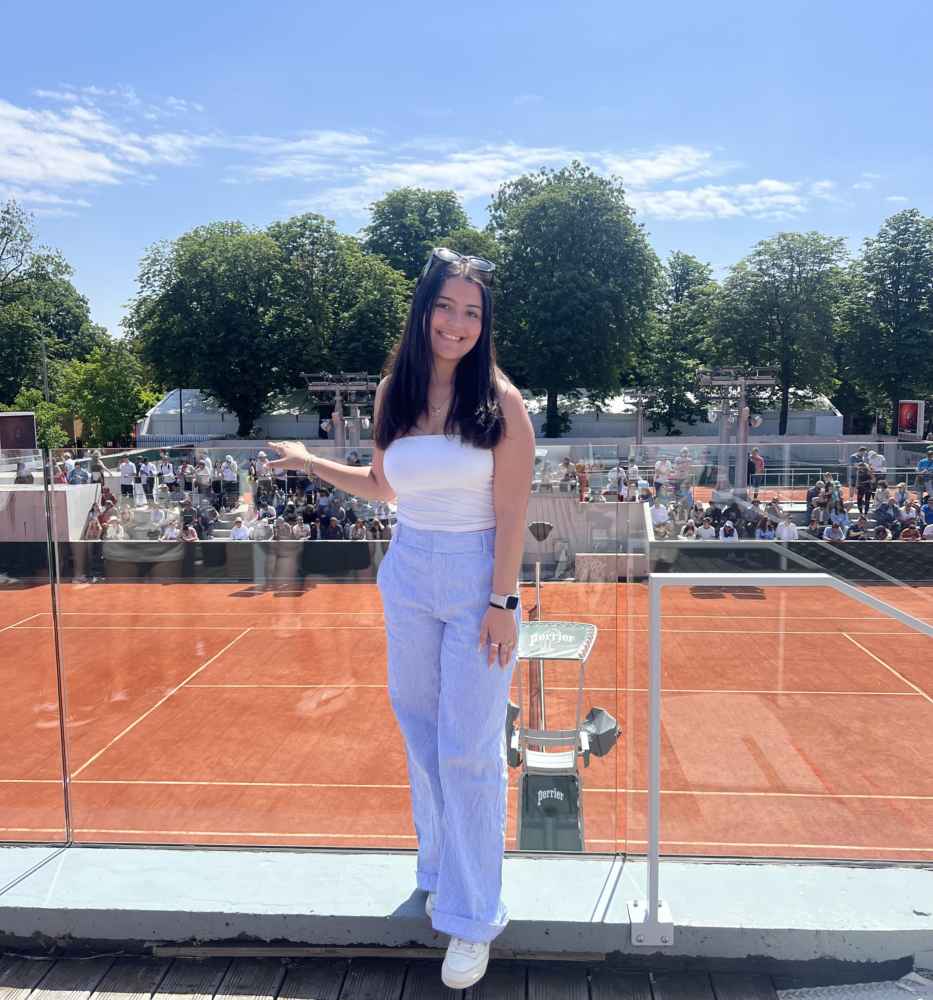

Hello! My name is Gabrielle Siordia and I am a junior at Michigan State University. I am currently studying Information Science, and pursuing a minor in Sports Business. Pictured above is me at Roland-Garros, the French Open, which I got to visit this past summer during my sports media study abroad program in Paris and Rome. Once I graduate from Michigan State, I hope to pursue a career in sports media, particularly videography, or in UX design.
Things I Enjoy
- Traveling: I have been to 5 different countries, and a handful of states around the US. This winter, I plan on going to Utah for the 3rd time and hope to go to Bryce Canyon National Park.
- Cooking: I try and make new recipes almost every day and I love anything that involves pasta or lots of garlic.
- Houseplants: I currently have 9 houseplants (and counting!) throughout my apartment. My oldest one is a Pothos that I have had for almost 4 years.